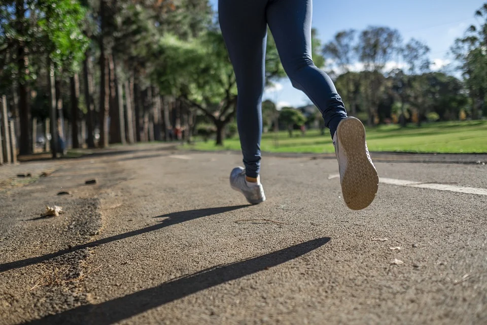

Sprint Projektet
Sprint Projektet var noget de unge studerne fik til opgave at lave. De har fået 1 uge til at udarbejde et produkt som kunne være en app, en hjemme side eller en ekstern side.
det her er blot 5 gode eksempler på hvordan det er gjort.

Lærer:
Kim
Kim har er de unges progammerings Lærer, han har hjulpet de unge mennesker med at fuldende deres programmering så det ser verdensklasse ud!
Lars
Lars er de unges UX & Content lærer, han har hjulpet de unge med at finde en virksomhed, samt hjulpet dem i gang med deres research og arbejdsmetoder.
Niels Erik
Niels Erik er de unges Design lærer, han har hjulpet med at lave muckups, moodboard, valg af tekst, og meget mere.